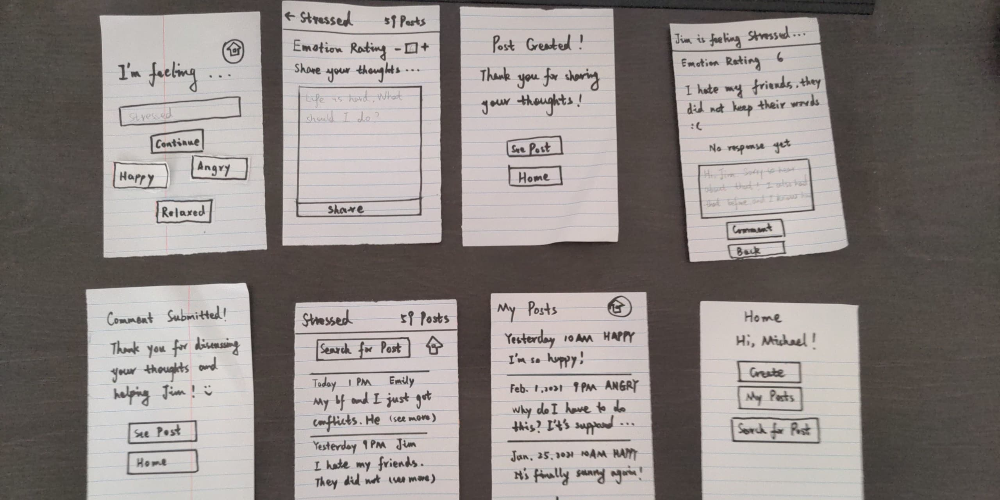
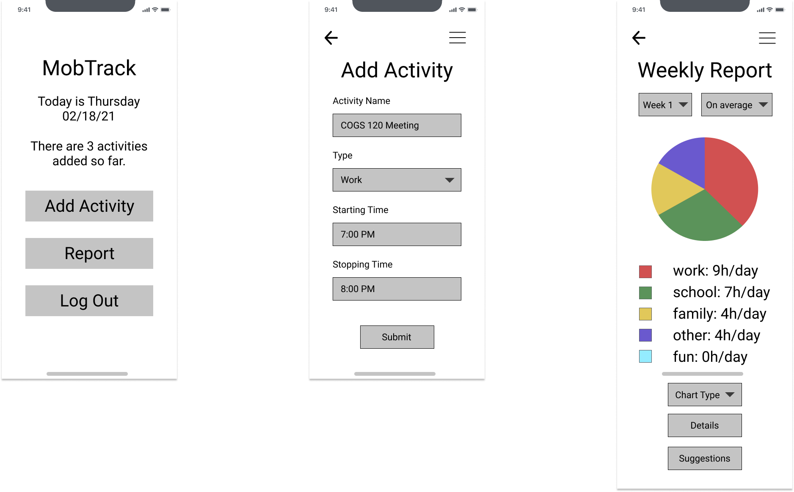
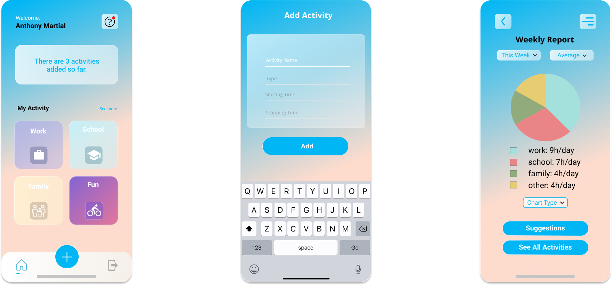
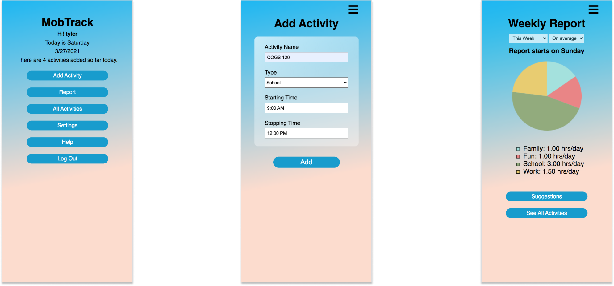
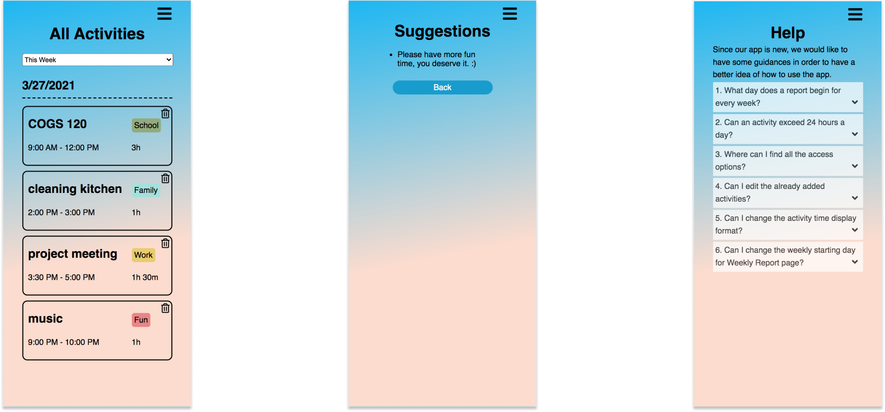

Note: If you would like to skip to our final prototype, you can go to HERE.
PROJECT OVERVIEW
For our Interaction Design class, we tackled the issue of "The Quantified Self" aspect, by addressing the problem of not being able to reflect daily patterns. When life gets busy, especially when being overwhelmed with responsibilities (e.g. family, school, work, etc.), many people feel lost. While, they do not know how what to do.
From the issue, we were motivated to create our mobile app, MobTrack. This was an app that allows users to add their daily activities, and check their activity reports and suggestions from the information that is gathered from those activities. From that, they are able to keep track of their daily patterns, and reflect on the meaning that animates them.
Date: January 2021 - March 2021
Role: Project Leader, UX/UI Developer
Teammates:UX/UI Designer: An Huynh
Full Stack Developer: Jiachen Niu
Tools: Figma, HTML/CSS/JavaScript, jQuery, JSON, AJAX, GitHub, and Heroku
RESEARCH METHODS
We chose interviews as the research method. The reason we chose this particular method was because we would like to talk in depth with users, and have open ended questions. Therefore, we would have more qualitative information, and there would be more to analyze. Additionally, the participants would like to talk with us using Zoom. For our plan, we were going to interview about 5 to 7 participants for our project. Moreover, they were relevant to our project because they have or would like to find a way or more to reflect their life.
RESEARCH FINDINGS
• It was common to feel lost, and did not know what to do in life.
• Most participants would like to find a way to reflect on their life, but they were not really able to it.
• Most of them pointed that being too busy with responsibilities was one of the reasons that they did not really reflect on their life.
• Being unmotivated after some challenges in life was another factor for many of them.
• A few participants reflect on their life through their notes, which either on notebook or phone. Nonetheless, it could be not effective due to not being able to organize or filter the notes.
POINT OF VIEW
According to our research, we got our Point of View for this aspect which is:
“When people get busy, they can forget about what makes their lives meaningful. Prompting people with their daily patterns can help them reflect on the meaning that animates them.”
STORYBOARDING
Our team created a few storyboards, in order to illustrate the issues relating to our topic, and how to solve them. The storyboard shown below was one of them.
PAPER PROTOTYPING
After sketching out the stories, we made two paper prototypes to visualize the main components of our mobile app. In order to find where we would be able to improve before moving on to designing a high fidelity prototype, we conducted three user testing on the paper prototypes.
Prototype 1
Prototype 1 focused on adding activities to the app, with information about Activity Name, Type, Starting Time, and Stopping Time. From those recorded activities, users would be able to check weekly report with suggestions from the app.


Prototype 2
Prototype 2 focused on a different way to address, which was seeking advice from other people in a communitity. Also, users would be able to give advice to other people.
USER FEEDBACK
We conducted user testing on Zoom, and got some feedback. Based on the feedback from the evaluators, we found 4 major issues with our paper prototypes such as:
• Not having help and documentation
Two users criticized that some sections of both prototypes were confusing, and having the “Help” section would help improve the “Help and Documentation” aspect.
• Lack of aesthetic and minimalist design
One user told us that both prototypes were really text heavy. Thus, adding more visuals would improve this aspect for the next steps.
• Lack of error prevention
There were not enough pages or pop-ups for confirmation to make sure that users did not take action accidentally.
• Issue in “User control and freedom”
On Prototype 1, one user told us that there was no place to go back and edit her activity if she added by mistake.
LOW FIDELITY PROTOTYPING
After receiving the feedback from users, we created low fidelity prototype on Figma. We included the three main screens, such as homepage, adding activity, and weekly report. Also, we added more visual in order to make the design more aesthetic and minimalist.
HIGH FIDELITY PROTOTYPING
Once having a clear idea about the structure of digital screens, we made high fidelity prototype, by adding colors and a few other details, in order to prepare everything before developing our application with HTML, CSS, and JavaScript.
FINAL PRODUCT
From the digital prototypes, we were able to develop our product with HTML, CSS, and JavaScript. Our initial goal was to make the application as similar to the Figma prototypes as possible. Nevertheless, due to the limitation in time and development, there were a few features that we did not implement, such as being able to choose chart type, and showing activities on homepage. Additionally, the feature for suggestions was not complete, because we did not have time to create complex logic for that.
While, we added a few other improving that aspects mentioned in user testing feedback, which included help section, confirmation for error prevention, and a place to go back and edit specific activities.
 If you would like to explore our application, you can try it HERE.
NEXT STEPS
If we were to continue the project, we would like to implement the features that we were not able to develop. Additionally, we would spend time to focus on building the complex logic to give better suggestions for users. Another aspect that we would want to improve was the visual design, as it would be great to implement the application to be more similar to the design on Figma. Furthermore, conducting more user testing would be another thing that we would like to do, since we would like to receive more feedback in order to iterate on the application.
FINAL REFLECTION
I learned a lot from working with my team in collaborating remotely, and it helped a lot specifically in the pandemic period. Also, I learned a lot from my team in making connections between design and development, such as checking if the design made sense to the developer, and discussing development limitations to the designer. If my teammates did it all again, we would take more time to plan the tasks more thoroughly, including what to expect to happen, and backup plans if the existing plans did not get executed as expected. Moreover, the successful planning choices we made were spending a lot of time to work on the application functionality, and to carefully check for heuristic errors.
Thank you for reading! There are other projects that you might want to explore and read, and you can access one of them below. :)